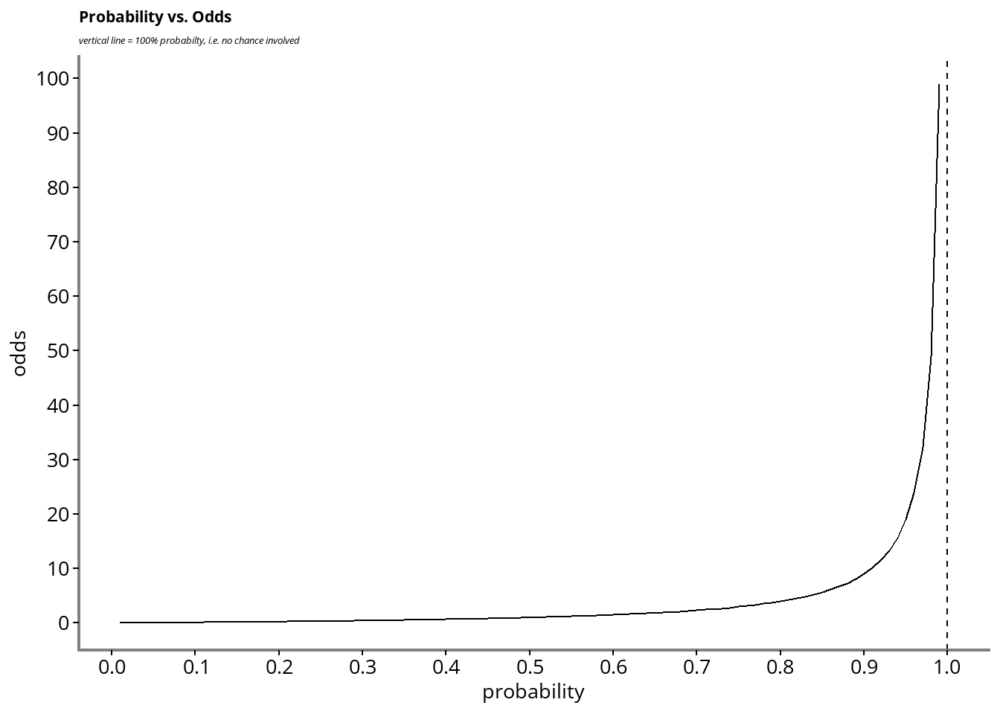

20 June 2025
Main things to be aware of are:
In groups, or individually, toss a coin 20 times and note down how many ‘heads’ you get.
Probability is a way of quantifying events, and how likely they are to happen, out of the available options.
We usually describe this as the number of times an event is likely to occur, out of the number of possible events.
\[P(A) = \frac{\text{Number of outcomes making up event (A)}}{\text{Total number of outcomes}}\]
If we consider flipping a fair coin:
\[P(heads) = \frac{(1 * heads)}{(1* heads) + (1 * tails)} = \frac{1}{2} = 0.5\]
If we consider a fair dice (die) roll, what is the probability of any given number, e.g. 6:
\[P(number) = \frac{(1 * number)}{\text{6 possible numbers}} = \frac{1}{6} = 0.16\dot{6}\]
If we consider a red card in a deck of cards (no jokers):
\[P(\text{red card}) = \frac{(26 * \text{red cards})}{(26 * \text{red cards}) + (26 * \text{black cards})} = \frac{26}{56} = \frac{1}{2} = 0.5\]
What would be the probability of drawing a queen in a full deck of cards (no jokers):
\[P(\text{queen}) = \frac{(4 * \text{queen})}{(52 * cards)} = \frac{4}{52} = \frac{1}{13} = 0.077\]
Roll 2 dice at least 24 times and note them down. Write each possible number down: 1 - 12, and make a tally of each roll.
What do you see?
How would you calculate the probability of rolling each number?
What is the probability of rolling any given number on each die?
Exclusivity: If we have more than one event, but one event prevents any other, we refer to it as exclusive ‘exclusive’. E.g. a coin toss being ‘heads’ mean it is not ‘tails’.
Exhaustive: If we have accounted for all possible outcomes, we can consider the options ‘exhausted.’ E.g. coin toss: probability of heads and probability of tails accounts for all options.
So the coin toss is mutually exclusive and exhaustive.
What are these two situations? Try and assess these in terms of exclusivity and exhaustivity:
Rolling a die and getting either an even number, or any number except 2.
Rolling a die and getting either an even number, or any number except 3.
Exhaustive, not mutually exclusive
Rolling a 4 or a 6 are both even, but the set contains all results.
It’s complicated
Considering A & B, it’s not exhaustive nor exclusive. More like ‘inclusive’ (conditional?)
When we are considering more than one event, we have to assess whether or not they are related.
You have a bag of “M&Ms”, containing two blue and 5 red M&Ms. What’s the probability of drawing two consecutive red M&Ms?
Draw 1 = \(P(red) = \frac{5 * red}{(5 * red) + (2 * blue)} = \frac{5}{7} = 0.71\)
You drew a red.
Draw 2 = \(P(red) = \frac{4 * red}{(4 * red) + (2 * blue)} = \frac{4}{6} = 0.6\dot{6}\)
You have a bag of “M&Ms”, containing two blue and 5 red M&Ms. What’s the probability of drawing two consecutive red M&Ms?
What would happen if you replaced the red M&M in the bag before the second draw?
How would you describe this situation now?
We can use | in our notation to show conditional probability: \(P(B|A)\)
So the probability of B, given that A has happened.
This leads us to the probability of A and B:
\[P(\text{A and B}) = P(A) * P(B|A)\]
Applied to our M&Ms, the probability of drawing two consecutive reds:
\[P(\text{Draw 2 | Draw 1}) = P(\text{Draw 1}) * P(\text{Draw 2 | Draw 1})) = \frac{5}{7} * \frac{4}{6} = 0.48\]
Calculate the probability of rolling two 3’s with a fair, six-sided die
Calculate the (a-priori) probability of rolling a total of 8 with two rolls of a fair, six-sided die
You will probably need to draw this out.
We have looked at probability, but ‘odds’ is related:
We keep the same numerator
Denominator is 1-numerator
Mutually exclusive and exhaustive
\[Odds(A) = \frac{P(A)}{1 - P(A)}\]
\[Odds(Heads) = \frac{P(Heads)}{1 - P(Heads)} = \frac{0.5}{(1-0.5)} = 1 \] … or if you are used to sports betting, we might hear the odds described as 1:1.

### The “2 x 2 table”
| O(+) | O(-) | |
|---|---|---|
| E+ | a | b |
| E- | c | d |
We often use the 2 x 2 table in epidemiology to express the probability of events and it is a way to help us classify the different counts and calculate the summary statistics.
| O(+) | O(-) | |
|---|---|---|
| E+ | a | b |
| E- | c | d |
| O(+) | O(-) | |
|---|---|---|
| E+ | 50 | 62 |
| E- | 550 | 760 |
Prevalence: the people in the population with the condition at any given time.
Incidence: the number of new cases in a time period.
Both measure relate to a specific time periods, but in different ways.
We can calculate the prevalence from the 2 x 2 table.
\[Prevalence_{o+} = \frac{(a + c)}{(a + b + c + d)} = \frac{(50 + 550)}{(50 + 62 + 550 + 760)} = 2022\]
When we use ‘absolute’ it refers to real numbers, not relative difference.
Risk of outcome in the exposed group: \(R_{E+} = a / (a+b) = 50 / (50 + 62) = 0.45\)
Risk of outcome in the un-exposed group: \(R_{E-} = c / (c+d) = 550 / (550 + 760) = 0.42\)
Using the two absolute risk measures, we can calculate the difference:
\(\text{Risk Difference} = R_{E+} - R_{E-} = 0.45 - 0.42 = 0.03\)
Interpretation: “3% of the outcomes could be attributed to the exposure, the rest would have happened anyway”
\[NNT = 1 / (RD) = 1 / 0.03 = 33.\dot{3}\]
We would need to expose / treat 33 patients to for one to benefit.
One common statistic is the ‘relative risk.’ This is the ratio of risk in two different groups. We may want to compare the risk in each exposure group and get a measure of that relationship.
\[ RR_{(E+ / E-)} = \frac{a / (a + b)}{c/ (c + d)}\]
Therefore, the odds ratio: \[ \text{OR(Exposure+ / Exposure-)} = \frac{a / b}{c/ d}\] The interpretation of an OR is the same as that of an RR, with the word odds substituted for risk.
| O(+) | O(-) | |
|---|---|---|
| E+ | a | b |
| E- | c | d |
| O(+) | O(-) | |
|---|---|---|
| E+ | 20 | 42 |
| E- | 248 | 3445 |
| O(+) | O(-) | |
|---|---|---|
| E+ | a | b |
| E- | c | d |
| O(+) | O(-) | |
|---|---|---|
| E+ | 20 | 42 |
| E- | 248 | 3445 |
Risk in the exposure group: \(R_{E+} = a / (a+b) = 20 / (20 + 42) = 0.32\)
Risk in the un-exposed group: \(R_{E-} c / (c+d) = 248 / (248 + 3445) = 0.07\)
Relative risk \(RR_{(R_{E+} / R_{E-})} = 0.32 / 0.07 = 4.57\)
NNT: \(NNT = 1 / (0.32 - 0.07) = 4\)
Odds ratio: \[ \text{OR(E+ / E-)} = \frac{a / b}{c/ d} = (20/42)/(248/3445) = 6.61\]